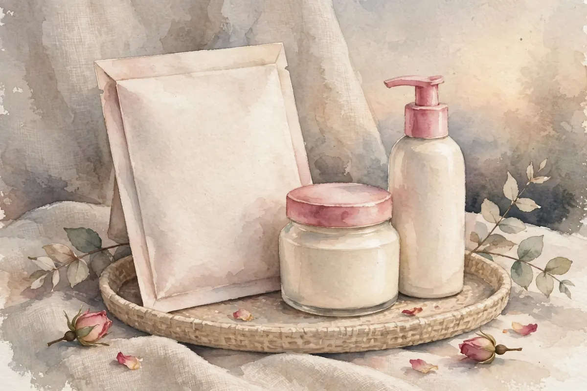

トップ ＞ スキンケア ＞ シートマスクのあとの仕上げの考え方
シートマスクのあとの仕上げの考え方

シートマスクは、特別な日のケアという印象がありますが、使い方の肝は「外したあと」にあります。施術でも、パックのあとの仕上げの仕方で、全体の印象が変わります。この記事では、マスク後の手順の考え方を整理します。
外したら、まず手でなじませる
マスクを外した直後の肌には、美容液がたっぷり残っています。まずは手のひらで顔全体を包むように当てて、残った分をなじませてください。こすって伸ばすのではなく、押さえるように運ぶのが基本です。首や耳のうしろまで伸ばすと、余りが無駄になりません。
袋の中に美容液が残っている場合は、手や首、腕などに使う方法もあります。顔に重ねて付ける場合は、量が多すぎるとべたつきの原因になるので、薄くのばす程度にとどめるのがおすすめです。
仕上げは「ふた」の役割として考える
シートマスクは「付けるケア」であり、そのあとの仕上げは別に必要です。マスクで与えた水分が逃げないよう、乳液やクリームでふたをするのが一般的な流れです。普段の夜のケアと同じ仕上げアイテムで構いません。マスクを使った日だからといって、仕上げを省かないことがポイントです。
順番は、商品の表示に案内がある場合はそれに従ってください。マスクの種類によっては、そのまま就寝が想定されているものもあります。表示を読むことが、仕上げの判断の土台になります。
使う時間と頻度は表示を守る
「10〜15分」といった使用時間の表示は、その商品の設計の前提です。長く置けばよいというものではなく、乾き始める前に外すのが基本とされています。テレビを見ながらうっかり長時間、というのは避けたいところです。
頻度も同様で、毎日用と週に数回用では設計が異なります。自分の生活リズムに合う頻度のものを選ぶことが、結果として続けるコツです。使用後にいつもと違う反応が出た場合は使用を控え、気になるときは皮膚科などの専門家に相談してください。
翌朝の洗顔との関係も見ておく
マスクを使った夜の翌朝は、顔の手触りがいつもと違うことがあります。前夜の仕上げがしっかりしていた日は、朝の洗顔の判断材料にもなります。べたつきが残っていると感じたら洗顔料を使う、さらっとしていれば流すだけにする、というように、前夜と翌朝をひと続きで考えるのがおすすめです。
また、マスクは「今日はこれを使う」と決める楽しみのあるアイテムです。使う日を週の計画に入れておくと、在庫の管理もしやすくなります。特別なケアほど、計画の中に置くことで、無理のない頻度に収まります。楽しみと管理は、両立できるものです。
マスクを使う日の夜は、ほかの「特別なケア」を重ねすぎないことも大切です。新しいアイテムの試用や、部分用の追加などを同じ日に重ねると、変化があったときに理由が追えなくなります。マスクの日は、マスクを主役にして、ほかは普段通りにする。この引き算が、ケアの観察を正確にします。
また、マスクの保管は、直射日光の当たらない、温度の安定した場所が基本です。まとめ買いをした場合も、開封日ならぬ「購入時期」を箱に書いておくと、使う順番の目安になります。特別なアイテムほど、管理の基本が効いてきます。
マスクのあとの仕上げでは、手に残った美容液の扱いも小さなポイントです。手を洗ってから仕上げに入るか、残りを首や腕に伸ばしてからにするか。順番を決めておくと、動作がぶれません。私は、残りを首まで伸ばし、手を軽く拭ってから仕上げの容器を持つ流れにしています。
容器の外側に美容液が付いたまま棚に戻すと、次に使うときの手触りが悪くなります。マスクの日は、片付けまで含めて手順にしておくと、翌朝の洗面所が気持ちよく使えます。
仕上げの考え方は、特別なものではありません。なじませる、ふたをする、片付ける。この3つの流れが、マスク後のケアの全体像です。
セラフィナ「マスクのあとは、ふたをするのが仕上げだね。時間も表示通りが基本だよ」